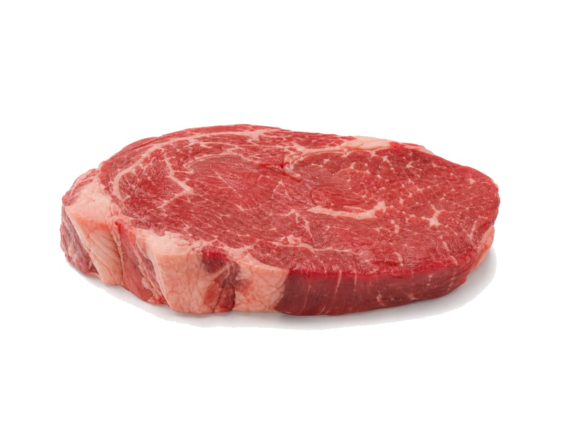

Polskie obiadki
Pyzy z mięsem
Pyzy z mięsem: 8 g białka, 158 kcal, 22 g węglowodanów i 4 g tłuszczu na 100 g. Kategoria: Polskie obiadki.
Kalorie158 kcalna 100 g
Białko / proteiny8 g
Węglowodany22 g
Tłuszcz4 g
Cena (szac.)~1,56 złza 100 g
Ceny zaktualizowano: maj 2026 (szacunek — ceny w popularnych supermarketach)
Porcja: porcja (250g)
| Kalorie | 395 kcal |
|---|---|
| Białko | 20 g |
| Węglowodany | 55 g |
| Tłuszcz | 10 g |
| Cena (szac.) | ~3,89 zł |
Szczegółowe składniki odżywcze na 100 g
| Wartość energetyczna (kalorie) | 158 kcal |
|---|---|
| Białko (proteiny) | 8 g |
| Węglowodany | 22 g |
| Tłuszcz | 4 g |
| Tłuszcze nasycone | 1.5 g |
| Tłuszcze nienasycone | 2.5 g |
| Witaminy i minerały | Żelazo, Tiamina (B1), Potas |
| Współczynnik kcal / 1 g białka | 19.8 |
| Cena produktu (szac. za 100 g) | ~1,56 zł |
| Cena za 100 g białka (szac.) | ~19,45 zł |